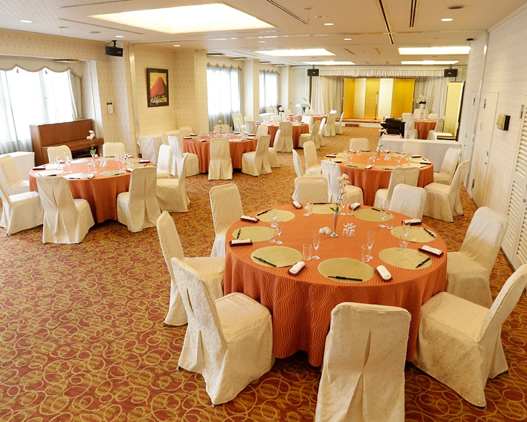
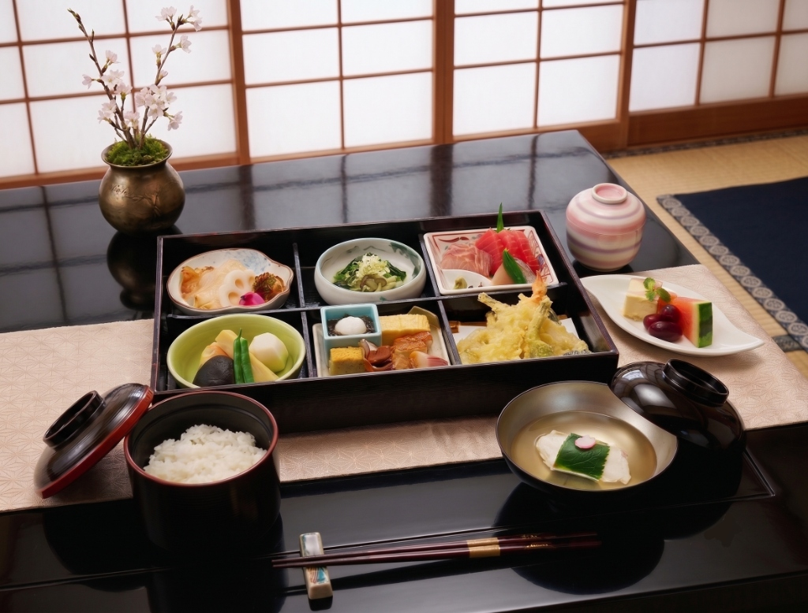

宇都宮の宴会・会議はホテル丸治Banquet & Conference
最大180名様の大型宴会から少人数のご宴会まで
宇都宮市中心部・東武宇都宮駅前に、大小さまざまな宴会場・会議室をご用意しております。
忘年会・新年会・歓送迎会・同窓会などのご宴会はもちろん、パーティー・会議・コンベンション・研修会・講演会など、少人数様から最大180名様規模の大型宴会まで、お客様のニーズに合わせて柔軟に対応いたします。完全個室でのご法要・ご会食も承っております。
宴会場の詳細を見る
宇都宮の宴会・大型宴会で選ばれる理由Why Maruji
ホテル丸治は、宇都宮で350年にわたり受け継がれてきたおもてなしの心で、会社の宴会から地域のお集まりまで数多くのご宴会をお手伝いしてきました。会場・お料理・プラン・送迎まで、宴会に必要なすべてをワンストップでご用意いたします。
宇都宮最大級の大型宴会場
7階の大宴会場「松竹梅」は220㎡・正餐150名／立食250名に対応。ほかにも末広・蓬莱・池上・泉など、人数とご用途に合わせて選べる宴会場・会議室を備え、最大180名様規模の大型宴会を承ります。
予算で選べる宴会プラン
忘年会・新年会は会席プラン4,500円～／大皿プラン4,000円～、飲み放題は2,500円。謝恩会・卒園パーティー、スポーツチームの卒団式・壮行会プランなど、季節とシーンに合わせた宴会プランをご用意しています。
板前が仕上げる会席料理
月替わりの会席コースは4,500円・5,500円・6,500円の3段階。四季折々の旬の食材を使った本格和食を、宴会の規模を問わずお楽しみいただけます。30名様からの和洋中立食ブッフェプランもございます。
送迎バス無料
28名乗りのマイクロバスを2台完備。10名様以上のご宴会は、宇都宮市内を中心に無料送迎を承ります（要予約）。幹事様の負担を減らし、参加者の皆様に安心してお集まりいただけます。
宇都宮の宴会シーン別ご案内Occasions
忘年会・新年会などの季節の宴会から、謝恩会・卒団式・ご法要まで。ホテル丸治が宇都宮で承る代表的なご宴会シーンをご紹介します。
忘年会
会社の忘年会から気の合う仲間の飲み会まで、宇都宮での忘年会はホテル丸治へ。会席プラン4,500円～／大皿プラン4,000円～に飲み放題（2,500円）を付けて、最大150名様までにぎやかにお楽しみいただけます。忘年会プランの詳細はこちら
新年会
新春の顔合わせや賀詞交歓会に。彩・雅・絢爛の3つの会席コースと、ローストビーフやすき鍋を囲む大皿プランをご用意し、1月2日から承ります。新年会プランの詳細はこちら
歓送迎会・送別会
春や秋の歓送迎会に。少人数の個室から部署全体の大人数まで人数に合わせて会場を選べ、無料送迎バスでご参加の皆様の集合・解散もスムーズです。宴会場のご案内はこちら
謝恩会・卒園パーティー
幼稚園・保育園・学校の謝恩会に。ブッフェと着席コースから選べる2時間飲み放題付きプランで、お子様料金もご用意。最大120名様まで対応します。謝恩会プランの詳細はこちら
卒団式・壮行会
スポーツ少年団・部活動チームのお集まりに。プロジェクターとスクリーンで思い出の映像を上映でき、宴会時間は3時間に延長。お子様料金ありの応援プランです。卒団式プランの詳細はこちら
同窓会・クラス会
懐かしい仲間との再会の席に。東武宇都宮駅前で集まりやすく、遠方からのご参加はそのままご宿泊も。350年伝承のおもてなしでお手伝いします。宴会場のご案内はこちら
ご法要・お斎
完全個室の落ち着いたお部屋で、ご法要後のお食事（お斎）を承ります。ご予算に応じた会席料理をご用意。お届け弁当・仕出しのご相談も可能です。会場のご案内はこちら
会議・研修・講演会
シアター形式で最大170名様まで。スクール・コの字など各レイアウトに対応し、BGM音響・高速Wi-Fi・プロジェクターを完備。昼は会議、夜は懇親会という使い方もできます。会議室のご案内はこちら
ご宴会のご予約から当日までの流れReservation Flow
-
お問い合わせ
お電話（028-621-2211）またはお問い合わせフォームから、ご希望の日程・おおよそのご人数・ご予算をお知らせください。空き状況をお調べしてご返答いたします。
-
会場とプランのご提案
ご人数とご用途に合わせて、松竹梅・蓬莱・末広など最適な宴会場と、会席・大皿・立食のお料理プランをご提案し、お見積りをお出しします。
-
お料理とお飲み物の決定
月替わりの会席コースや大皿料理、飲み放題の内容をお決めいただきます。食物アレルギーがある場合は事前にご相談ください。
-
送迎とご人数の最終確認
10名様以上のご宴会は、28名乗りマイクロバスによる無料送迎をご予約いただけます。ご人数の変更はお早めにご連絡ください。
-
ご宴会当日
会場の設営・進行はスタッフがサポートいたします。ご利用時間は基本2時間（プランにより3時間）。宴会後は、お得な宿泊パックでそのままお泊まりいただけます。
350年伝承のおもてなしOur Heritage
ホテル丸治は、栃木県宇都宮市の中心部で350年にわたり受け継がれてきたおもてなしの心を今に伝えるホテルです。東武宇都宮駅前という立地から、ビジネスでのご宿泊はもちろん、地域の企業様・団体様・ご家族の宴会、会議、ご法要の会場として長くご愛顧いただいてまいりました。
時代とともにご宴会のかたちは変わっても、お客様をお迎えする心は変わりません。板前が毎月おしながきを書き替える会席料理、ご人数とご用途に合わせて表情を変える大小の宴会場、幹事様の負担を減らす送迎バスや宿泊パック。宇都宮で宴会場をお探しの際は、どうぞお気軽にホテル丸治へご相談ください。
おせち料理や恵方巻など、季節の催しもののご案内は新着情報をご覧ください。
お届けお弁当・お料理Delivery Bento & Catering
こだわりの味をお好みの場所へ
厳選された食材を使用したホテルメイドのお弁当を、ご指定の場所までお届けいたします。
会議用弁当から、お祝い事、ご法要など、様々なシーンに合わせたお料理をご提案。出張販売やケータリングサービスもご用意しております。
お弁当メニューを見る